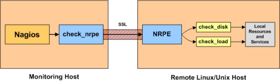

Up To: Contents
Up To: Contents
 See Also: Quickstart Installation Guide, Monitoring Publicly Available Services
See Also: Quickstart Installation Guide, Monitoring Publicly Available Services
Introduction
This document describes how you can monitor "private" services and attributes of Linux/UNIX servers, such as:
Publicly available services that are provided by Linux servers (HTTP, FTP, SSH, SMTP, etc.) can be monitored easily by following the documentation on monitoring publicly available services.
 Note: These instructions assume that you've installed Nagios according to the quickstart guide. The sample configuration entries below reference objects that are defined in the sample config files (commands.cfg, templates.cfg, etc.) that are installed if you follow the quickstart.
Note: These instructions assume that you've installed Nagios according to the quickstart guide. The sample configuration entries below reference objects that are defined in the sample config files (commands.cfg, templates.cfg, etc.) that are installed if you follow the quickstart.
Overview
[Note: This document has not been completed. I would recommend you read the documentation on the NRPE addon for instructions on how to monitor a remote Linux/Unix server.]
There are several different ways to monitor attributes or remote Linux/Unix servers. One is by using shared SSH keys and the check_by_ssh plugin to execute plugins on remote servers. This method will not be covered here, but can result in high load on your monitoring server if you are monitoring hundreds or thousands of services. The overhead of setting up/destroying SSH connections is the cause of this.
Another common method of monitoring remote Linux/Unix hosts is to use the NRPE addon. NRPE allows you to execute plugins on remote Linux/Unix hosts. This is useful if you need to monitor local resources/attributes like disk usage, CPU load, memory usage, etc. on a remote host.